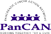
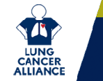
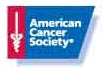
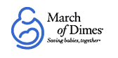
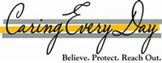
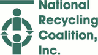

Do you know of a worthy cause we should feature, send link and short description
to:
annie@fundraisers.com
Click on the month for detailed information on the causes.
Cataract Awareness
Cervical Cancer Awareness
Glaucoma Awareness
Volunteer Blood Donors
Thyroid Awareness
Folic Acid Awareness
National Wear Red Day
Organ Donor Day
Burn Awareness Week
Eating Disorders Awareness Week
American Heart Month
Wise Health Consumer Month
Children's Dental Health Month
National Cardiac Rehabilitation Week
American Diabetes Alert Day
National Kidney Month
National MS Month
American Red Cross Month
YMCA Healthy Kids Day
Save Your Vision Week
Mental Retardation Month
National Patient Safety Awareness Week
National Poison Prevention Week
World Tuberculosis Day
Earth Day
National Volunteer Week
World Health Day
National Autism Awareness Month
Cancer Control Month
National Child Abuse Prevention Month
Sexually Transmitted Disease Month
Foot Health Month
Stroke Awareness Month
MDA-ALS Awareness
Lupus Awareness
Food Allergy Awareness Week
Women's Health Month
Buckle Up America Week
World No Tobacco Day
National Arthritis Month
High Blood Pressure Month
Hemochromatosis Screening Awareness Month
Sight Saving Month
National Alzheimers & Brain Awareness Month
Helen Keller Deaf-Blind Awareness Week
Dystonia Awareness Week
National Headache Awareness Week
National Men's Health Month
HIV Testing Day
Vision Research Month
Myasthenia Gravis Awareness Month
National Aphasia Awareness Month
National Scleroderma Awareness Month

Fundraisers.com Features This Month's Causes
Pancreatic Cancer Awareness Month

Today marks the beginning of National Pancreatic Cancer Awareness Month- a time to educate the public about pancreatic cancer, a little-known disease, which kills one person every 17 minutes in the U.S. Pancreatic cancer, the fourth leading cause of cancer death in the United States, has a 99 percent mortality rate à the highest fatality rate of all cancers; yet it receives the least amount of federal funding of any cancer for research to find effective treatments.
For more information, please visit >>> The Pancreatic Cancer Action Network
American Diabetes Awareness Month
 Diabetes is a disease in which the body does not produce or properly use insulin. Insulin is a hormone that is needed to convert sugar, starches and other food into energy needed for daily life. The cause of diabetes continues to be a mystery, although both genetics and environmental factors such as obesity and lack of exercise appear to play roles.
Diabetes is a disease in which the body does not produce or properly use insulin. Insulin is a hormone that is needed to convert sugar, starches and other food into energy needed for daily life. The cause of diabetes continues to be a mystery, although both genetics and environmental factors such as obesity and lack of exercise appear to play roles.
There are 20.8 million people in the United States, or 7% of the population, who have diabetes. While an estimated 14.6 million have been diagnosed with diabetes, unfortunately, 6.2 million people (or nearly one-third) are unaware that they have the disease.
For more info, please visit >>> The American Diabetes Association
Veteran's Awareness Month
 The National Veterans Awareness Week resolution was written to help encourage, develop, and disseminate educational materials and activities. Students in elementary and secondary school learn about the contributions of veterans and their importance in preserving American peace and prosperity.
The National Veterans Awareness Week resolution was written to help encourage, develop, and disseminate educational materials and activities. Students in elementary and secondary school learn about the contributions of veterans and their importance in preserving American peace and prosperity.
For more information, please visit >>> Veteran's Awareness Month
Lung Cancer Awareness Month

Lung Cancer Awareness Month (LCAM) is a national campaign dedicated to increasing attention to lung cancer issues. By organizing rallies, distributing educational material, holding fund-raising events, contacting Congress, and speaking to the media, those involved in LCAM bring much-needed support and attention to a disease that each year kills more people than breast, prostate, colon and pancreas cancers combined.
For more information, please visit >>> The Lung Cancer Alliance
Great American Smokeout

Every year, smokers across the nation take part in the American Cancer Society's Great American Smokeout¨ by smoking less or quitting for the day on the third Thursday of November. The event challenges people to stop using tobacco and raises awareness of the many effective ways to quit for good.
For more information, please visit the >>> American Cancer Society
America Education Day
 Help celebrate American Education Week (AEW). This year's theme, Great Public Schools: A Basic Right and Our Responsibility, highlights the importance of bringing together educators, school staff, parents, students, and communities in a unified effort to build great public schools. The theme also reflects NEA's vision of calling upon America to provide students with quality public schools so that they can grow, prosper, and achieve in the 21st century.
Help celebrate American Education Week (AEW). This year's theme, Great Public Schools: A Basic Right and Our Responsibility, highlights the importance of bringing together educators, school staff, parents, students, and communities in a unified effort to build great public schools. The theme also reflects NEA's vision of calling upon America to provide students with quality public schools so that they can grow, prosper, and achieve in the 21st century.
For more information, please visit >>> America Education Day
Prematurity Awareness Month

Every day 1 in 8 babies born in the U.S. arrives too soon. Premature birth can happen to any pregnant woman, and no one knows why. It is a serious, common and costly problem. The March of Dimes is leading the campaign to reduce premature births by supporting research and by educating the public and health care providers.
For more information, please visit the >>> March of Dimes
National Adoption Awareness Month
Each year, November is recognized as National Adoption Awareness Month. While all adoption-related issues are important, the particular focus of this month is the adoption of children currently in foster care.
For more information, please visit >>> Adoption.com
National Council For Adoption
NCFA has been a champion of adoption since its founding in 1980. Whether as an advocate for state laws that promote sound adoption policy, a resource for federal officials and policymakers about appropriate federal adoption initiatives and reform, a diplomat for sound international adoption policy, or a source of adoption facts and education, NCFA is devoted to serving the best interests of children through adoption. Learn more about the ways in which NCFA works to promote the positive option of adoption.
For more information, please visit >>> National Council For Adoption
Child Welfare Adoption Clearinghouse
Resources on all aspects of domestic and intercountry adoption, including adoption from foster care. Includes information for prospective and adoptive parents; information about searching for birth relatives; and resources for professionals on recruiting adoptive families, preparing children and youth, supporting birth parents, and providing postadoption services.For more information, please visit >>> Child Welfare Information Clearinghouse
National Family Caregivers Month

The National Family Caregivers Association (NFCA) supports, empowers, educates, and speaks up for the more than 50 million Americans who care for a chronically ill, aged, or disabled loved one. NFCA reaches across the boundaries of different diagnoses, different relationships and different life stages to address the common needs and concerns of all family caregivers.
They are committed to improving the overall quality of life of caregiving families and minimizing the disparities between family caregivers and non-caregivers.
For more information, please visit >>> The National Family Caregivers Association
United States Marine Corps Day
You can help the Marine Corps friends and family by supporting them while they support one another through boot camp and deployment.
For more information, please visit >>> Marine Corps Parents
America Recycles Day

With the involvement and enthusiasm of people like you, recycling is back! And so are thousands upon thousands of recycled products made from materials that would otherwise be piling up in our nation's landfills. It doesn't just make sense. It makes a huge difference to our environment, our quality of life and our country's future.
For more information, please visit >>> National Recycling Coalition
Do you know of a worthy cause we should feature, send link and short description
to:
annie@fundraisers.com
Click on the month for detailed information on the causes.
National Therapeutic Recreation Week
International Massage Week
Eye Injury Prevention Month
Light the Night for Sight
International Group B Strep Awareness Month
National Minority Donor Awareness Day
America's Night Out Against Crime
Spinal Muscular Atrophy Month
Psoriasis Awareness Month
Amblyopia Awareness Month
Prostate Cancer Awareness Month
Suicide Awareness Week
STOP a Suicide Today
Alcohol Awareness Month
Gynecologic Cancer Awareness Month
National Cholesterol Education Month
National Menopause Awareness Month
National Child Passenger Safety Awareness Week
Breast Cancer Awareness
World Food Day
Domestic Violence Awareness
Healthy Lung Month
National Dental Hygiene
Down Syndrome Awareness
School Lunch Week